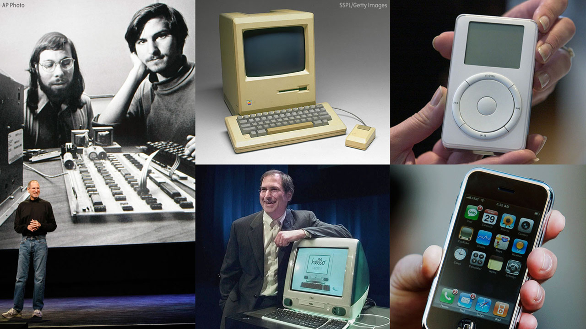
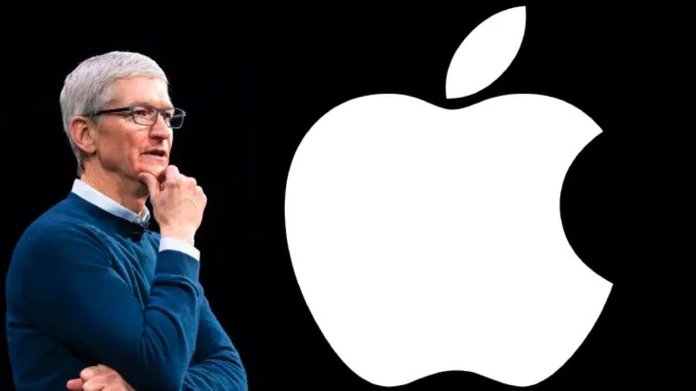

A Apple Inc. é uma das empresas mais influentes e inovadoras do mundo, com uma história marcada por avanços tecnológicos revolucionários e uma visão única sobre design e experiência do usuário. Fundada em 1° de abril de 1976 por Steve Jobs, Steve Wozniak e Ronald Wayne, a Apple nasceu com o objetivo de desenvolver e vender computadores pessoais.
OS PRIMEIROS PASSOS
A jornada da Apple começou em uma garagem, onde os três fundadores criaram o primeiro computador da empresa, o Apple I. Esse computador foi um sucesso inicial entre estusiastas da tecnologia, o que motivou a criação do Apple II em 1977. o Apple II foi um dos primeiros computadores pessoais a ser comercializado com sucesso, estabelecendo a Apple como uma força emergente no mercado de tecnologia.
INOVAÇÃO E CRESCIMENTO
Durante os anos 80, a Apple continuou a expandir seu portfólio de produtos. Em 1984, a empresa lançou o revolucionário Macintosh, o primeiro computador pessoal a ser oferecido com uma interface gráfica amigável e o uso de um mouse. Este lançamento estabeleceu um novo padrão para a computação pessoal e ajudou a definir a identidade da Apple como uma marca voltada para inovação e o design de fácil uso.
No entanto, a Apple enfrentou uma série de desafios nos anos seguintes, incluindo dificuldades financeiras e mudanças na liderança. Em 1985, Steve Jobs deixou a empresa após um desentendimento com a diretoria. A Apple passou por uma série de altos e baixos, mas continuou a desenvolver novos produtos, como o Power Macintosh e o Newton, o primeiro assistente pessoal digital (PDA) da empresa, embora com pouco sucesso no mercado.

O RETORNO DE STEVE JOBS E A REVOLUÇÃO DIGITAL
A grande virada para Apple aconteceu em 1997, quando Steve Jobs retornou à empresa após a aquisição de sua outra empresa, a NeXT. Com Jobs novamente no comando, a Apple começou a focar em simplificar seus produtos e aprimorar seu design. Em 2001, a Apple lançou o iPod, um dispositivo de música que transformou a indústria musical e marcou o início de uma nova era para a Apple.
Em 2007, a Apple fez uma de suas maiores revoluções de sua história ao lançar o iPhone. O iPhone foi o primeiro smartphone a integrar uma tela sensível ao toque de alta qualidade, a internet móvel e aplicativos em um único dispositivo. Seu lançamento não só transformou a indústria de telefonia móvel, mas também consolidou a Apple como uma das empreasas mais valiosas do mundo.
A ERA DOS DISPOSITIVOS MÓVEIS
Com o sucesso do iPhone, a Apple continuou a expandir sua linha de produtos, lançando o iPad em 2010, que ajudou a popularizar os tablets, e o Apple Watch em 2015, marcando sua entrada no mercado de dispositivos vestíveis.
A Apple também continuou a inovar em software, com o iOS, o sistema operacional móvel que alimenta seus dispositivos, e o macOS, que trouxe grandes melhorias ao computador pessoal. A Apple também tem investido pesadamente em serviços, como a App Store, Apple Music, iCloud, Apple TV+, e Apple Pay, diversificando suas fontes de receita e se posicionando como uma plataforma de serviços integrada.

SUSTENTABILIDADE, FUTURO E LEGADO
A Apple, com a missão de criar produtos inovadores e fáceis de usar, continua a impactar profundamente a forma como vivemos e trabalhamos. Desde os dias de garagem até se tornar a primeira empresa a alcançar um valor de mercado de 3 trilhões de dólares, estando próxima de se tornar a primeira com valor de 4 trilhões de dólares, a história da Apple é de perseverança, criatividade e um compromisso implacável com a excelência.
Esta empresa não apenas transformou a tecnologia, mas também a cultura global, criando um ecossistema de dispositivos, serviços e experiências que continuam a definir a maneira como nos conectamos com o mundo ao nosso redor.
VEJA MAIS
Acesse o site do Museu da Apple, em que é descrita a linha do tempo dos produtos e marcos da Apple.